<title>Montado y para elegir</title>
<meta name="claude:viewport-fit-sides" content="cover">
<link rel="preconnect" href="https://fonts.googleapis.com">
<link rel="preconnect" href="https://fonts.gstatic.com" crossorigin>
<link rel="stylesheet" href="https://fonts.googleapis.com/css2?family=EB+Garamond:ital,wght@0,400;0,500;1,400&family=Inter+Tight:wght@400;500;600&display=swap">
<style>
/* Una columna de papel y tinta, como las páginas «Montado»: arriba lo montado de la tabla del recorrido de
   tester; debajo, cada opinión pintada sobre la app con sus letras, la recomendada en oliva. */
:root{
  --paper:#F2EDE0;--card:#FBF8F1;
  --ink:#1F1C17;--ink-2:#4A453C;--ink-3:#77705F;
  --line:#C9C0A8;
  --olive:#3E5A3A;--olive-soft:rgba(62,90,58,.12);
  --terra:#A85E43;--terra-soft:rgba(168,94,67,.12);
  --display:'EB Garamond',Georgia,'Times New Roman',serif;
  --ui:'Inter Tight',system-ui,-apple-system,'Segoe UI',sans-serif;
}
@media (prefers-color-scheme: dark){:root:not([data-theme="light"]){
  --paper:#1d1a14;--card:#2c271f;--ink:#EDE5D3;--ink-2:#c0b49e;--ink-3:#B2A995;--line:#4d4536;
  --olive:#98B58B;--olive-soft:rgba(122,154,109,.16);--terra:#E8A98F;--terra-soft:rgba(232,169,143,.14);color-scheme:dark;
}}
:root[data-theme="dark"]{
  --paper:#1d1a14;--card:#2c271f;--ink:#EDE5D3;--ink-2:#c0b49e;--ink-3:#B2A995;--line:#4d4536;
  --olive:#98B58B;--olive-soft:rgba(122,154,109,.16);--terra:#E8A98F;--terra-soft:rgba(232,169,143,.14);color-scheme:dark;
}
*{box-sizing:border-box}
body{margin:0;background:var(--paper);color:var(--ink);font-family:var(--ui);font-size:16px;line-height:1.55;-webkit-text-size-adjust:100%}
main{max-width:880px;margin:0 auto;padding-left:max(16px,env(safe-area-inset-left,0px));padding-right:max(16px,env(safe-area-inset-right,0px));padding-block:40px 72px}
h1,h2,h3{font-family:var(--display);font-style:italic;font-weight:400;line-height:1.15;margin:0;text-wrap:balance}
h1{font-size:clamp(32px,6vw,44px)}
h2{font-size:clamp(23px,4vw,28px);margin:44px 0 10px;padding-top:22px;border-top:1px solid var(--line)}
h3{font-size:21px;margin:34px 0 6px}
details{margin-top:30px;border-top:1px solid var(--line);padding-top:18px}
summary{cursor:pointer;font-family:var(--display);font-style:italic;font-size:21px;color:var(--ink)}
summary:focus-visible{outline:2px solid var(--olive);outline-offset:3px}
.ancho{grid-template-columns:repeat(auto-fit,minmax(260px,1fr))}
.ancho figure img,.ancho figcaption{max-width:560px}
p{margin:0 0 12px;color:var(--ink-2);max-width:68ch}
strong{color:var(--ink);font-weight:500}
code{font-size:13px}
.eyebrow{font-size:12px;letter-spacing:.14em;text-transform:uppercase;color:var(--ink-3);margin-bottom:10px}
.lead{font-family:var(--display);font-size:21px;color:var(--ink);max-width:62ch;margin-top:14px}
.nota{font-size:13px;color:var(--ink-3)}
ol.montado{padding-left:22px;margin:12px 0 0;color:var(--ink-2);max-width:72ch}
ol.montado li{margin-bottom:10px}
ol.montado li b{color:var(--ink);font-weight:500}
.par{display:grid;gap:14px;grid-template-columns:repeat(auto-fit,minmax(200px,1fr));margin:14px 0}
figure{margin:0;min-width:0}
figure img{display:block;width:100%;max-width:260px;height:auto;border:1px solid var(--line);border-radius:8px;background:var(--card)}
figcaption{font-size:13px;line-height:1.45;color:var(--ink-2);margin-top:7px;max-width:260px}
figcaption b{display:block;font-weight:500;color:var(--ink)}
.letra{display:inline-block;font-size:11px;letter-spacing:.08em;text-transform:uppercase;padding:1px 8px;border-radius:999px;border:1px solid var(--line);color:var(--ink-3);margin-bottom:4px}
.rec .letra{background:var(--olive-soft);border-color:var(--olive);color:var(--olive)}
.hoy .letra{background:var(--terra-soft);border-color:transparent;color:var(--terra)}
.textos{border:1px solid var(--line);border-radius:10px;background:var(--card);overflow-x:auto;margin:12px 0}
table{border-collapse:collapse;width:100%;min-width:560px;font-size:14px}
th,td{text-align:left;vertical-align:top;padding:9px 12px;border-bottom:1px solid var(--line)}
th{font-size:11px;letter-spacing:.1em;text-transform:uppercase;color:var(--ink-3);font-weight:500}
tr:last-child td{border-bottom:0}
td{color:var(--ink-2)}
td.a{color:var(--olive)}
.pregunta{border-left:3px solid var(--terra);padding:4px 0 4px 14px;margin:26px 0}
.pregunta p{margin-bottom:6px}
.rec-linea{color:var(--olive)}
.queda{background:var(--olive-soft);border-radius:10px;padding:12px 16px;margin:16px 0 0;color:var(--ink);max-width:70ch}
.resumen{font-variant-numeric:tabular-nums;font-size:15px;background:var(--card);border:1px solid var(--line);border-radius:10px;padding:12px 16px;max-width:70ch}
a{color:var(--olive)}
</style>

<main>
  <div class="eyebrow">PACE · lo que salió del recorrido de tester · 19 nov. 2026</div>
  <h1>Montado y para elegir</h1>
  <p class="lead">Están montadas todas tus letras menos la 11. La 11 cambia nombres que se ven, así que va abajo con sus opciones, para que elijas.</p>
  <p>Todo está en la rama <code>claude/arreglos-tester-18nov</code>, desde la 0.210.0, una letra por commit y cada una con su prueba vista caer antes del arreglo. <code>verify</code>, en verde. Falta tu «júntalo». El recorrido de origen, <a href="https://claude.ai/artifact/T8J9vT4s5aodPFLd1k3iYM">Tres días de tester</a>, está en tu otra cuenta.</p>
  <p class="resumen" id="suite"><strong>La suite entera en la rama</strong> (19 nov., 54 min): 1764 pruebas en verde, 2 saltadas a propósito y 4 en rojo. Una era mía: una prueba que pulsaba «Preparar jornada» dos veces, y con la 2 basta una; arreglada en <code>e1767429</code>. Dos pasan al repetirlas solas. La cuarta, la barra de 4·7·8 en Respira, cae también en <code>main</code> a la misma hora y pasaba media hora antes: no viene de la rama, y la apunto para mirarla aparte.</p>

  <h2>Lo nuevo de hoy</h2>
  <ol class="montado">
    <li><b>2 · «Preparar jornada» en un toque.</b> Con tu semana guardada, el botón de la tarjeta corta sirve el día; el horario se cambia luego con «Cambiar». «Hoy es distinto» está ahora en la tarjeta, debajo de «Jornada entera». Las horas «9:00–17:00» ya no salen ahí: con el enlace al lado, la home pedía scroll a 360 × 640. Sin semana guardada, todo igual. Solo cambia en el móvil; en el ordenador ya era un toque.</li>
    <li><b>1 · Los sellos, juntos.</b> Los que llegan a la vez salen en un aviso, «3 sellos nuevos · Primer paso y dos más», con una campanita. Salen al ganarlos, en cuanto no hay nada abierto encima: «Curiosidad» sale al cerrar los Ajustes. Con un Foco en marcha esperan a que acabe. Si llevan más de 15 min esperando, salen sin sonido.</li>
    <li><b>8 · Lo de ayer, dicho: «Piernas: ayer sin mover».</b> Tu A decía «ayer no las moviste», pero partía en dos líneas la ventana de la pausa a 360 px en seis de las doce frases (las medí en el hueco de verdad). «Ayer sin mover» cabe en todas y dice lo mismo, como pasó con la 7. En inglés, «Legs: idle yesterday». Solo sale si lo último fue ayer; si fue el viernes y hoy es lunes, la línea de siempre.</li>
    <li><b>10 · Textos de la casa, el resto.</b> En «Ver todo», «6 vasos en la jornada», y «Junto a la mesa · Sin material…» en una línea sin borde. El calendario de la web dice «Descarga lo que queda de hoy y ábrelo con tu calendario»; en las apps sigue «Se añade». La primera semana, «Hoy, jueves»; desde la siguiente, «Hoy, como cada jueves», también en el aviso de entrada. La pausa ya hecha dice «hecha» en su fila, sin «Otra». Y <code>CONTENT.md</code> dice la frase de las pausas como es hoy.</li>
  </ol>
  <div class="par">
    <figure>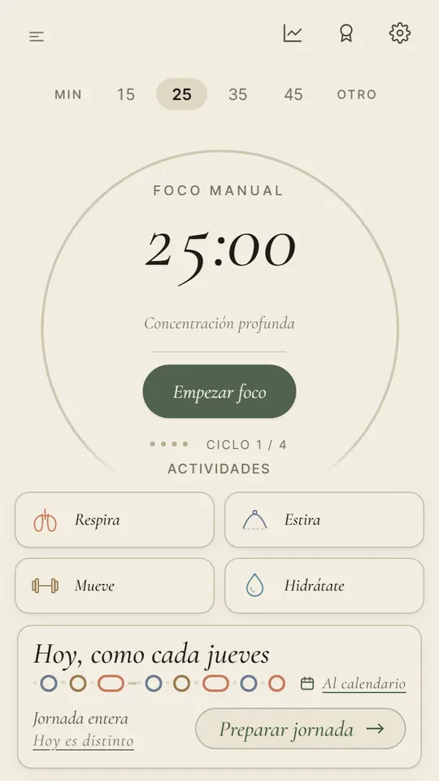<figcaption><b>2 · 360 px</b>«Hoy es distinto» bajo «Jornada entera». La home sigue sin scroll.</figcaption></figure>
    <figure>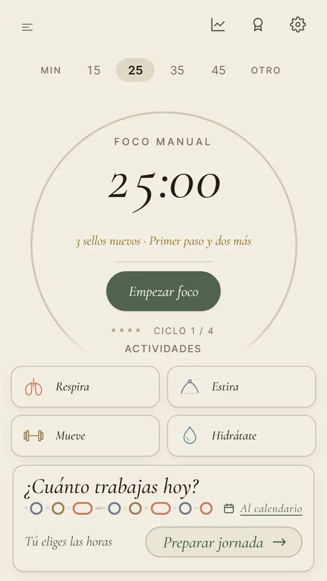<figcaption><b>1 · 360 px</b>Tres sellos, un aviso y una campanita.</figcaption></figure>
    <figure>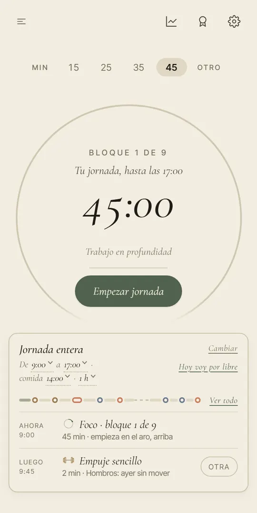<figcaption><b>8 · 360 px</b>Ayer no salieron los hombros: «Hombros: ayer sin mover».</figcaption></figure>
    <figure>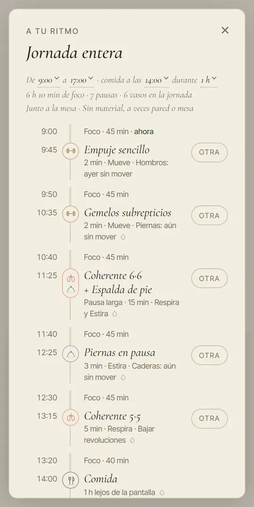<figcaption><b>10 · «Ver todo»</b>«6 vasos en la jornada» y el contexto en una línea.</figcaption></figure>
    <figure>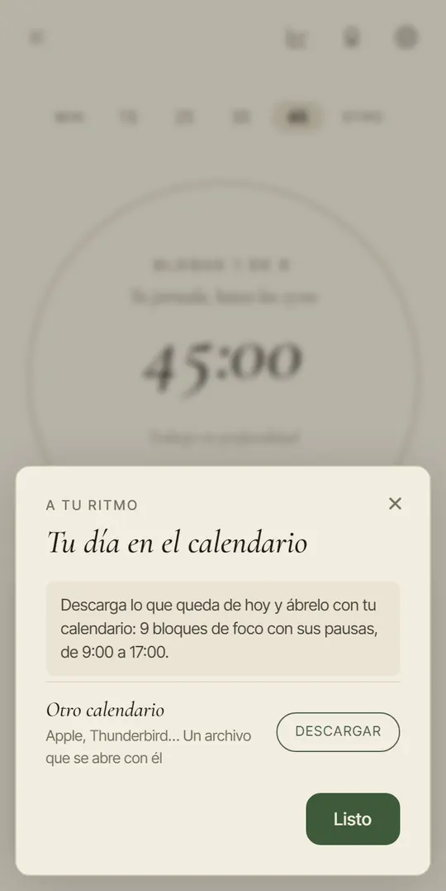<figcaption><b>10 · calendario de la web</b>«Descarga… y ábrelo con tu calendario».</figcaption></figure>
    <figure>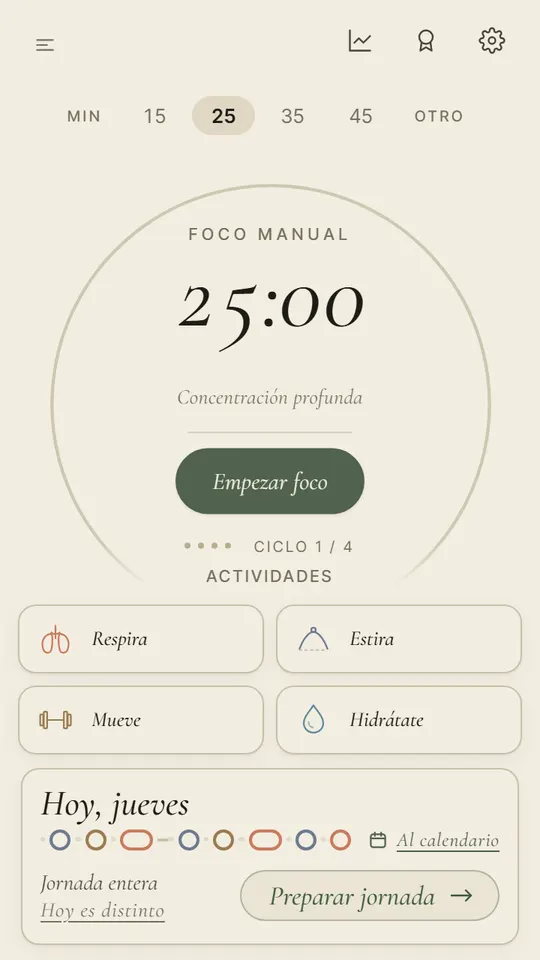<figcaption><b>10 · la primera semana</b>«Hoy, jueves».</figcaption></figure>
    <figure>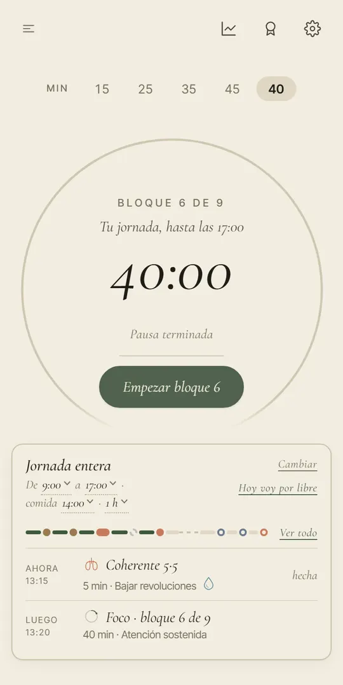<figcaption><b>10 · la pausa ya hecha</b>«hecha» en vez de «Otra».</figcaption></figure>
  </div>
  <div class="par ancho">
    <figure>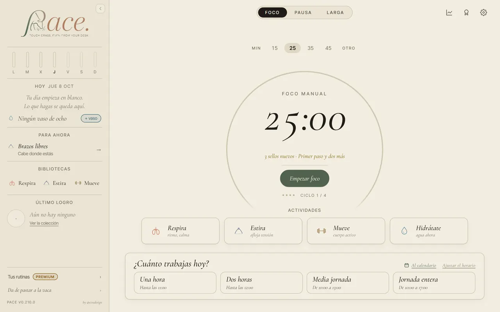<figcaption><b>1 · 1280 px</b>En el ordenador, igual: dentro del aro.</figcaption></figure>
    <figure>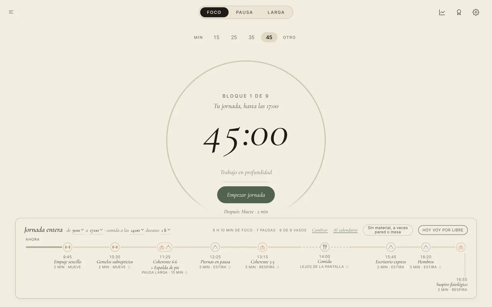<figcaption><b>8 · 1280 px</b>La línea del día del ordenador dice lo mismo.</figcaption></figure>
  </div>
  <p class="nota">Lo demás de hoy no cambia en el ordenador: la tarjeta corta, la fila «Ahora» y «Ver todo» son del móvil.</p>

  <h2>Para elegir: 11 · Nombres que solo entiende quien hizo PACE</h2>
  <p>Repasé con <code>CONTENT.md</code> los nombres de Respira, Mueve, Estira y el aro. A los tres que viste se suman otros tres del mismo tipo. No he montado ninguno: todos cambian un nombre que se ve.</p>
  <div class="textos"><table>
    <thead><tr><th>Dónde</th><th>Hoy</th><th>A · recomendada</th><th>B</th></tr></thead>
    <tbody>
      <tr><td>11.1 · Respira</td><td>Coherente 432<br><span class="nota">«sobre un drone de fondo»</span></td><td class="a">Coherente con fondo<br><span class="nota">«con un sonido grave de fondo»</span></td><td>Coherente 432 Hz</td></tr>
      <tr><td>11.2 · Mueve</td><td>Gemelos subrepticios</td><td class="a">Gemelos bajo la mesa</td><td>Talones bajo la mesa</td></tr>
      <tr><td>11.3 · El aro, sin plan</td><td>FOCO MANUAL</td><td class="a">FOCO</td><td>FOCO LIBRE</td></tr>
      <tr><td>11.4 · Grupo de Mueve</td><td>Sigilo</td><td class="a">Sin levantarte</td><td>Bajo la mesa</td></tr>
      <tr><td>11.5 · Estira</td><td>Antídoto silla</td><td class="a">Antídoto a la silla</td><td>Contra la silla</td></tr>
      <tr><td>11.6 · Mueve</td><td>Postura reset</td><td class="a">Recolocar la postura</td><td>Postura, de nuevo</td></tr>
    </tbody>
  </table></div>
  <p class="nota">Por qué A. «432» son hercios, no un ritmo como «5·5», y «drone» tampoco se entiende. «Manual» se oponía a los Caminos, que no se ven hasta después de v1, y con un plan el aro ya dice «Bloque 1 de 9». «Sigilo» y «subrepticios» son la broma de quien lo escribió; lo que importa es que se hace sentado. «Antídoto a la silla» es como lo dice ya la pausa. «Reset» es la única palabra en inglés de la lista. En inglés iría lo mismo: «Coherent, with a backdrop», «Calf raises under the desk», «FOCUS», «Without standing up», «Chair antidote» y «Posture reset», que ya se entiende.</p>
  <p class="nota">No los toco: «Box 4·4·4·4», «4·7·8», «Kumbhaka 1:4:2» o «Kapalabhati» son nombres de técnica que se buscan así. «ATG» y «Ancestral» ya no salen en la lista.</p>

  <div class="pregunta">
    <h3>¿Qué letras para la 11?</h3>
    <p>Una letra por fila. Con las recomendadas:</p>
    <p class="resumen">11.1A · 11.2A · 11.3A · 11.4A · 11.5A · 11.6A</p>
    <p>Y para todo lo montado, tu «júntalo».</p>
  </div>

  <h2>Montado el 18 nov.</h2>
  <p class="queda"><strong>Se queda como está</strong>, como dijiste: con el día servido, la home se centra en lo que toca ahora, y Respira, Estira, Mueve e Hidrátate siguen en el cajón y con «Hoy voy por libre».</p>
  <p>Contestaste «1A + 2A + 3b atenuadas y no hecha las dos + 4A + 5A + 6A + 7A + 8A + 9A + 10A + 11A». Montado en la misma rama, una por commit y con su prueba:</p>
  <ol class="montado">
    <li><b>3 · Estadísticas › Hoy:</b> las pausas que no se hicieron salen atenuadas y con «no hecha» («not done»), sin minutos.</li>
    <li><b>4 · «Pausa terminada»</b> los 15 minutos siguientes a la pausa; después, la línea de siempre. La prueba de tu V1 que lo pedía a las 12:10 pide ahora lo contrario. La del portátil cerrado sigue igual, porque ahí la pausa empieza al volver y acaba de terminar.</li>
    <li><b>5 · La jornada cerrada</b> lleva solo «Seguir por libre», el del aro; la tarjeta se queda con «Cambiar».</li>
    <li><b>6 · El runner</b> cuenta los pasos sin el descanso («Paso 1 de 4») y, en el descanso, dice «Descanso». En los dos runners.</li>
    <li><b>7 · «Hombros: aún sin mover».</b> Sin el «hoy» de la A: con «aún» y «hoy», Hombros, Espalda y Caderas partían en dos líneas la ventana de la pausa a 360 px, que una prueba vigila. Dice lo mismo y mide lo que medía.</li>
    <li><b>9 · En inglés:</b> «Workday over», «Keep going» y «I already did one».</li>
    <li><b>10 · Textos de la casa, la primera parte.</b> En la bienvenida, «cada lunes, tu semana ajustada» y «con los ejercicios de PACE». En Ajustes, «La voz que cuenta las fases» y «Lo que suena al respirar». Lo de «mientras respiras» de la A partía la línea, y Ajustes pedía 29 px de scroll a 360 × 640. En inglés, «The voice for each phase» y «What plays as you breathe», por lo mismo.</li>
  </ol>
  <div class="par">
    <figure>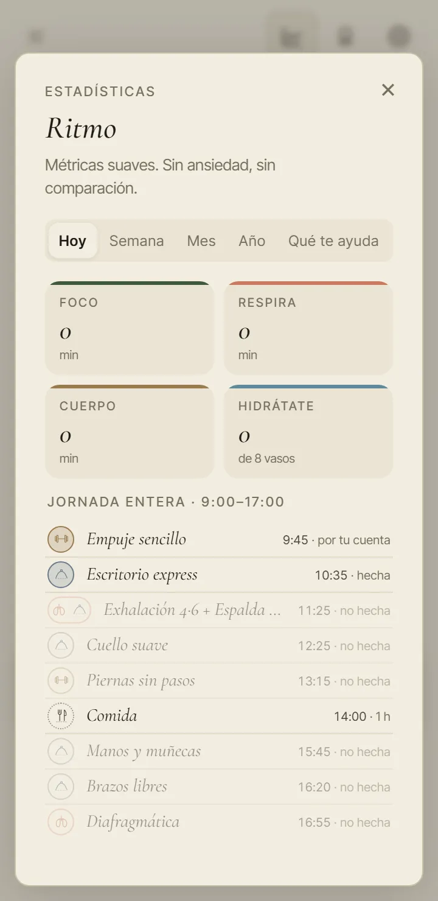<figcaption><b>3 · montada</b>Escritorio express, hecha; las demás, atenuadas y «no hecha».</figcaption></figure>
    <figure>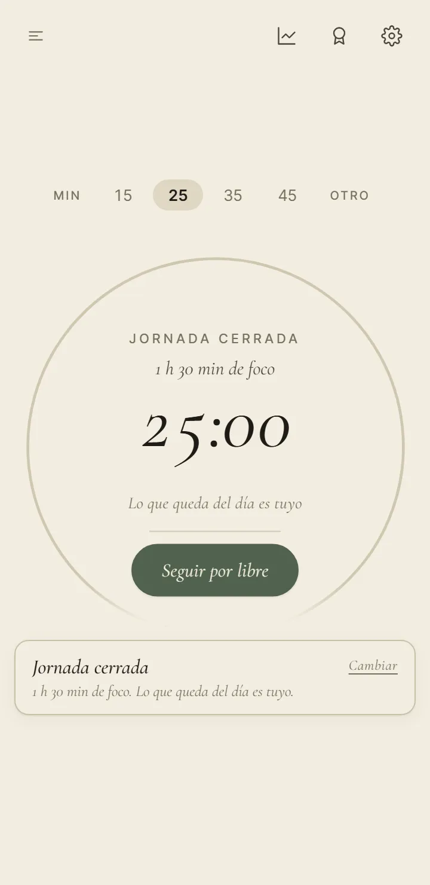<figcaption><b>5 · montada</b>«Seguir por libre» en el aro; la tarjeta, con «Cambiar».</figcaption></figure>
    <figure><figcaption><b>6 · montada</b>«Paso 1 de 4», como «Prepárate» y el cierre.</figcaption></figure>
    <figure>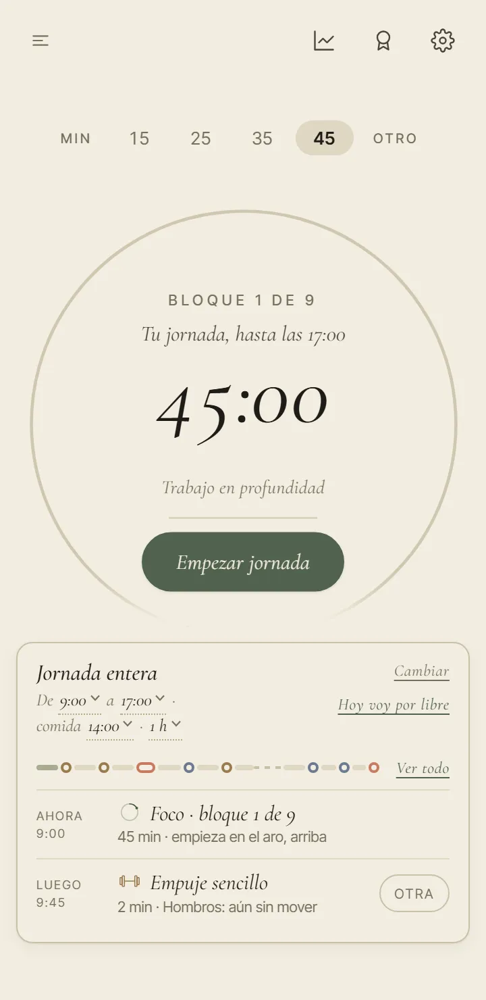<figcaption><b>7 · montada</b>«Hombros: aún sin mover».</figcaption></figure>
  </div>

  <h3>Los fallos, montados</h3>
  <ol class="montado">
    <li><b>Estadísticas › Hoy dice lo que hiciste en cada pausa.</b> La pausa cambiada con «Otra» por Escritorio express salía como «Manos y muñecas · hecha». Ahora manda lo que se guardó al hacerla, también si «Otra» cambió de Mueve a Estira.</li>
    <li><b>El sello del aro ya no se pinta encima del cajón del móvil.</b> Con el panel abierto no se ve, igual que con una ventana abierta. En el ordenador la barra va al lado y el sello sigue a la vista.</li>
    <li><b>Los logros dicen la verdad</b>, en los dos idiomas. «Larga sesión» es ahora «Cinco bloques de Foco de 45 min», sin el «sin pausa». Dicen Foco en vez de Pomodoro, «antes de las 9:00» en vez de «9am», «50 rutinas de Estira en la silla» en vez de «50 sesiones SIT», y PACE en mayúscula.</li>
    <li><b>Escritorio express dice «5 movimientos»</b>, que son los que tiene. Una prueba mira en todas las rutinas de Mueve y Estira que el número de pasos o movimientos de la ficha sea el de verdad.</li>
    <li><b>«Prepárate» cuenta los pasos como el cierre</b>, sin los descansos: Espalda de pie dice 4 al empezar y 4 al acabar (antes, 5 y 4). Así queda el runner como el único que cuenta el descanso: es la pregunta 6.</li>
    <li><b>En la pausa larga de «Dos horas: sal de la silla», Respira dice «De pie o sentado»</b> en vez de «Siéntate cómodo». Solo en esa pausa; fuera de ella, como siempre.</li>
    <li><b>Los porqués del «No» y «Deshacer» miden 24 px de alto</b>, lo que pide WCAG para tocar sin dar al vecino (medían 22 y 20). Se ven igual.</li>
  </ol>
  <figure style="margin-top:14px"><figcaption><b>El 1, montado</b>«Escritorio express · 10:35 · hecha», lo que se hizo.</figcaption></figure>
  <p class="nota">«Pausa terminada» horas después no era un fallo. Tu V1 A del 7 nov. lo pide así, y una prueba lo vigila (pestaña de fondo de 8:10 a 12:10: el aro dice «Pausa terminada»). Lo deshice; es la pregunta 4.</p>

  <details>
  <summary>Lo que se pintó el 18 nov. y contestaste: todo A salvo la 3, que fue la B con «no hecha»</summary>

  <h3>1 · Los sellos: cuándo salen y cuántos suenan</h3>
  <p>Hoy esperan a que acabe un Foco y salen uno detrás de otro con su campanita. Tras la primera pausa suenan cuatro en diez segundos, y alguno llega horas tarde (Curiosidad, ganado a las 9:43, a las 16:58).</p>
  <div class="par">
    <figure class="hoy"><figcaption><span class="letra">Hoy</span><b>Uno detrás de otro</b>Cada uno, su campanita; los ganados en un Foco, al acabarlo.</figcaption></figure>
    <figure class="rec"><figcaption><span class="letra">A · recomendada</span><b>Juntos, con una campanita</b>«3 sellos nuevos · Primer paso y dos más». Salen al ganarlos salvo en un Foco; si esperaron más de 15 min, sin sonido.</figcaption></figure>
    <figure><figcaption><span class="letra">B</span><b>Sin aviso en el aro</b>Un punto en Logros hasta que los miras. Sin campanita.</figcaption></figure>
  </div>

  <h3>2 · «Preparar jornada» en un toque</h3>
  <p>Hoy el primer «Preparar jornada» no prepara: abre la tarjeta con otro «Preparar jornada» igual. Cada mañana, dos toques.</p>
  <div class="par">
    <figure class="hoy"><figcaption><span class="letra">Hoy</span><b>El paso de en medio</b>El horario y otro «Preparar jornada».</figcaption></figure>
    <figure class="rec"><figcaption><span class="letra">A · recomendada</span><b>Del primer toque, al día servido</b>El horario se cambia después con «Cambiar», y «Hoy es distinto» sigue en la tarjeta corta.</figcaption></figure>
  </div>
  <p class="nota">B es dejarlo como está.</p>

  <h3>3 · Estadísticas › Hoy: las pausas que no hiciste</h3>
  <p>Ya dice bien lo hecho (lo montado). Las que no se hicieron salen con sus minutos, igual que las hechas.</p>
  <div class="par">
    <figure class="hoy"><figcaption><span class="letra">Hoy</span><b>«11:25 · 15 min»</b>Se lee como hecha.</figcaption></figure>
    <figure class="rec">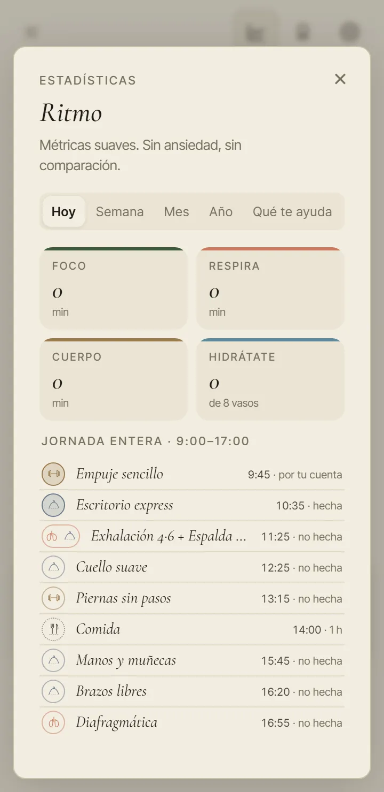<figcaption><span class="letra">A · recomendada</span><b>«11:25 · no hecha»</b>Sin minutos y sin atenuar.</figcaption></figure>
    <figure>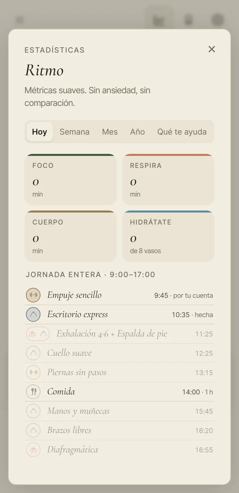<figcaption><span class="letra">B</span><b>Atenuadas, solo la hora</b>Más callado, pero lo atenuado se ha leído otras veces como cosa rara.</figcaption></figure>
  </div>

  <h3>4 · «Pausa terminada» horas después</h3>
  <p>Tu V1 A (7 nov.) dejó «Pausa terminada» en el aro al volver. El tester volvió cuatro horas y media después y lo leyó igual.</p>
  <div class="par">
    <figure class="hoy"><figcaption><span class="letra">Hoy</span><b>12:20 · «Pausa terminada»</b>La pausa acabó a las 9:50.</figcaption></figure>
    <figure class="rec"><figcaption><span class="letra">A · recomendada</span><b>Un rato, y luego lo de siempre</b>«Pausa terminada» los 15 min siguientes; después, «Trabajo en profundidad».</figcaption></figure>
    <figure>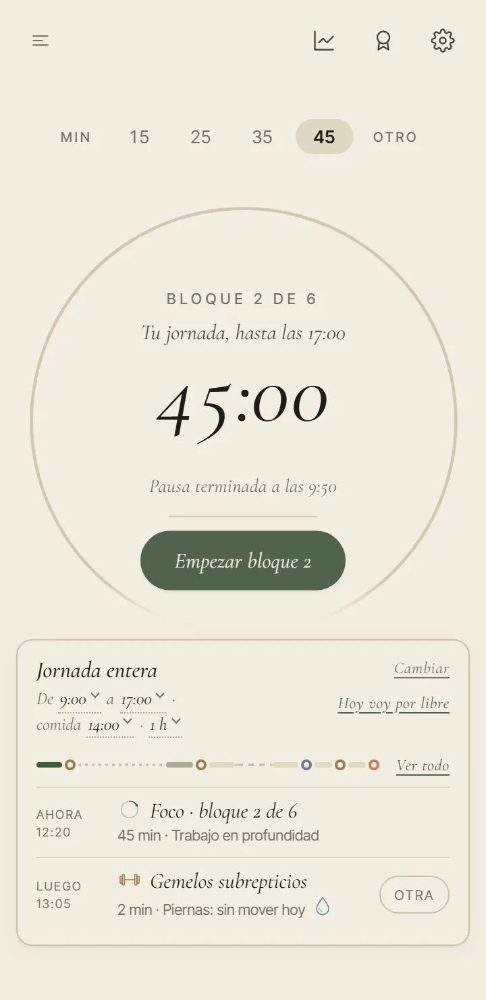<figcaption><span class="letra">B</span><b>Con su hora</b>«Pausa terminada a las 9:50»: cierto siempre.</figcaption></figure>
  </div>

  <h3>5 · La jornada cerrada, con dos botones casi iguales</h3>
  <div class="par">
    <figure class="hoy">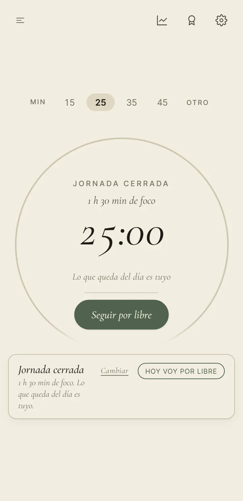<figcaption><span class="letra">Hoy</span><b>Los dos</b>«Seguir por libre» y «HOY VOY POR LIBRE».</figcaption></figure>
    <figure class="rec"><figcaption><span class="letra">A · recomendada</span><b>Solo el del aro</b>La tarjeta se queda con «Cambiar».</figcaption></figure>
    <figure>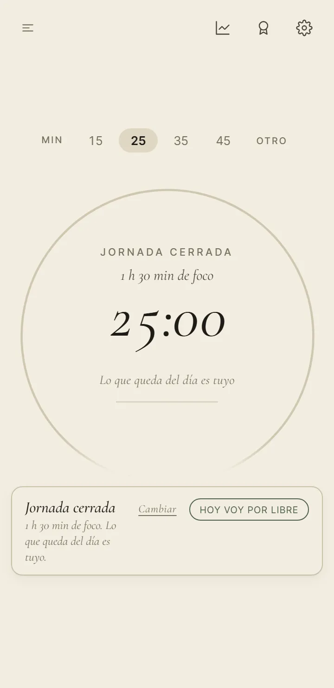<figcaption><span class="letra">B</span><b>Solo el de la tarjeta</b>El aro dice lo hecho, sin botón.</figcaption></figure>
  </div>

  <h3>6 · El runner aún cuenta el descanso</h3>
  <p>Con el 5 montado, «Prepárate» y el cierre cuentan 4 en Espalda de pie, y el runner dice «Paso 1 de 5», porque el descanso cuenta como paso.</p>
  <div class="par">
    <figure><figcaption><b>Montado</b>«De pie. Sin prisa. 4 pasos.»</figcaption></figure>
    <figure class="hoy"><figcaption><span class="letra">Hoy</span><b>«Paso 1 de 5»</b>El descanso es el paso 2.</figcaption></figure>
    <figure class="rec">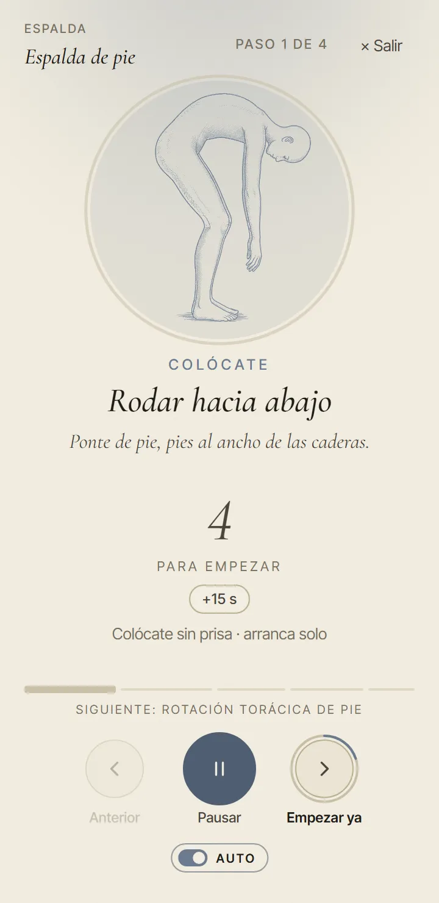<figcaption><span class="letra">A · recomendada</span><b>«Paso 1 de 4»</b>Y el descanso dice «Descanso», sin número.</figcaption></figure>
  </div>
  <p class="nota">B es dejar el runner como está.</p>

  <h3>7 · «Hombros: sin mover hoy»</h3>
  <p>Se puede leer como «hoy no muevas los hombros». En inglés, «Shoulders: unmoved today», se entiende.</p>
  <div class="par">
    <figure class="hoy"><figcaption><span class="letra">Hoy</span><b>«Hombros: sin mover hoy»</b></figcaption></figure>
    <figure class="rec">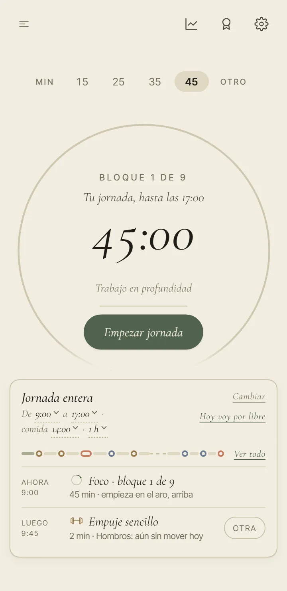<figcaption><span class="letra">A · recomendada</span><b>«Hombros: aún sin mover hoy»</b>Una palabra, y ya no es una orden.</figcaption></figure>
    <figure><figcaption><span class="letra">B</span><b>«Para los hombros, que aún no has movido»</b>Más clara, más larga: en la ventana de la pausa va en mayúsculas.</figcaption></figure>
  </div>

  <h3>8 · Lo de ayer, dicho</h3>
  <p>El martes el día empieza por las piernas porque el lunes se saltó Gemelos, pero nada lo dice.</p>
  <div class="par">
    <figure class="rec">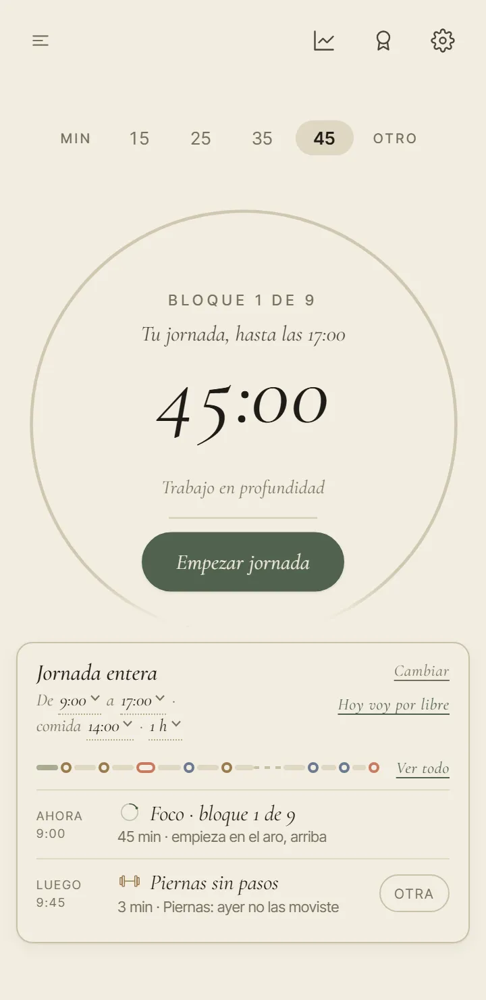<figcaption><span class="letra">A · recomendada</span><b>«Piernas: ayer no las moviste»</b>Solo cuando la pausa viene de lo de ayer; si no, la línea de siempre.</figcaption></figure>
  </div>
  <p class="nota">B es dejarlo callado, como hoy.</p>

  <h3>9 · En inglés</h3>
  <div class="par">
    <figure class="hoy"><figcaption><span class="letra">Hoy</span><b>«Day complete»</b>Tras un solo bloque; y «Keep going freestyle».</figcaption></figure>
    <figure class="hoy">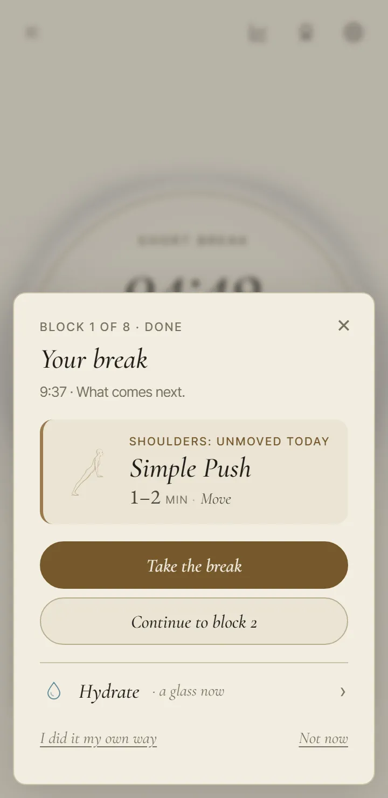<figcaption><span class="letra">Hoy</span><b>«I did it my own way»</b>Suena a canción.</figcaption></figure>
  </div>
  <div class="textos"><table>
    <thead><tr><th>Hoy</th><th>A · recomendada</th><th>B</th></tr></thead>
    <tbody>
      <tr><td>Day complete</td><td class="a">Workday over</td><td>Day closed</td></tr>
      <tr><td>Keep going freestyle</td><td class="a">Keep going</td><td>Carry on, no plan</td></tr>
      <tr><td>I did it my own way</td><td class="a">I already did one</td><td>Done on my own</td></tr>
    </tbody>
  </table></div>

  <h3>10 · Textos de la casa</h3>
  <p>Frases que un tester nuevo no entiende sin conocer PACE. En cada una, A cambia el texto y B lo deja.</p>
  <div class="par">
    <figure><figcaption><b>La tarjeta del primer lunes</b></figcaption></figure>
    <figure><figcaption><b>La bienvenida</b></figcaption></figure>
    <figure>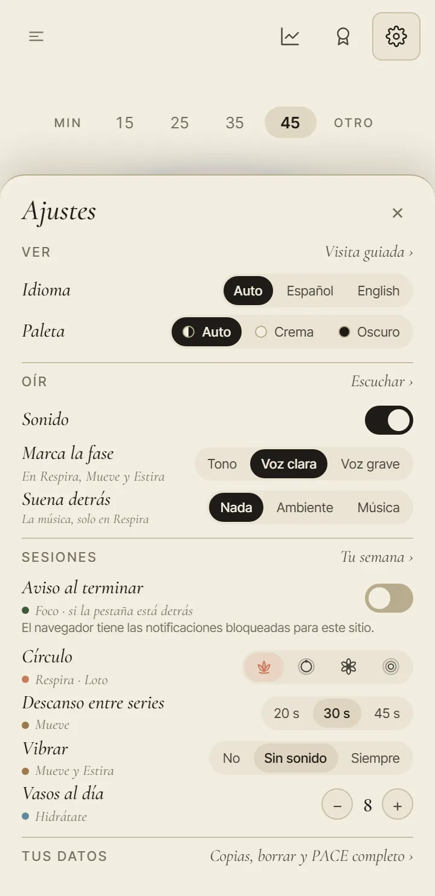<figcaption><b>Ajustes</b></figcaption></figure>
  </div>
  <div class="textos"><table>
    <thead><tr><th>Dónde</th><th>Hoy</th><th>A · recomendada</th></tr></thead>
    <tbody>
      <tr><td>La tarjeta, la primera semana</td><td>Hoy, como cada lunes</td><td class="a">Hoy, lunes</td></tr>
      <tr><td>Bienvenida, PACE completo</td><td>la carta del lunes · con el catálogo</td><td class="a">cada lunes, tu semana ajustada · con los ejercicios de PACE</td></tr>
      <tr><td>Ajustes, línea pequeña</td><td>Marca la fase · Suena detrás</td><td class="a">La voz que cuenta las fases · Lo que suena mientras respiras</td></tr>
      <tr><td>«Ver todo»</td><td>6 de 8 vasos · «Junto a la mesa» con borde</td><td class="a">6 vasos en la jornada · el contexto sin borde, que no parezca botón</td></tr>
      <tr><td>Calendario en la web</td><td>Se añade lo que queda de hoy…</td><td class="a">Descarga lo que queda de hoy y ábrelo con tu calendario…</td></tr>
      <tr><td>La pausa ya hecha, en la tarjeta</td><td>Ahora · Empuje sencillo · OTRA</td><td class="a">Ahora · Empuje sencillo · hecha</td></tr>
    </tbody>
  </table></div>

  </details>
</main>
